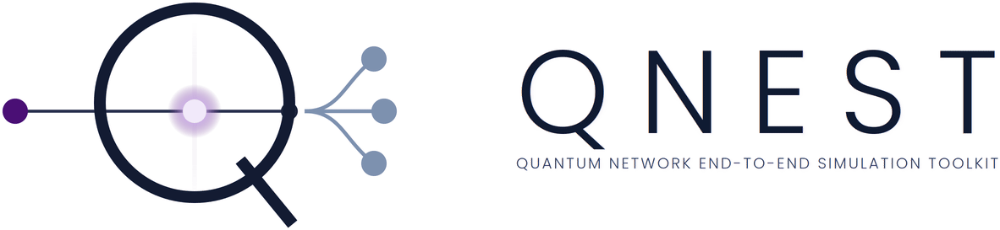
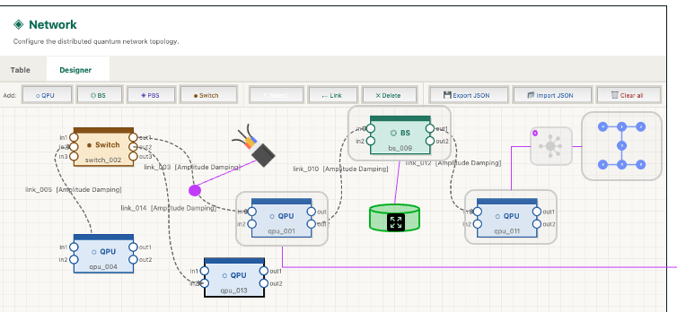
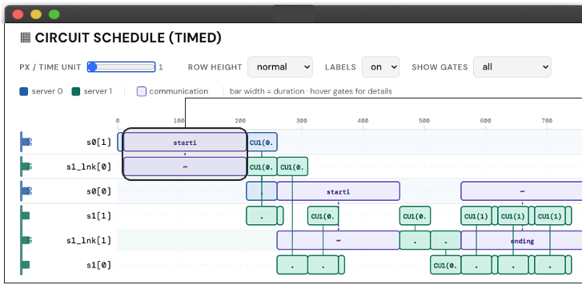
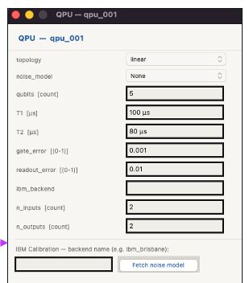

Handout — one A4 page, single-sided.
Edit the text below directly; edit print.css for colours and type.
Print or save as PDF with Background graphics switched on.

See it live
ECOC 2026 · Demo D22
Tuesday 22 September, 11:00–12:30
Pavilion 1, demo area
Chalmers University of Technology
× University of Bristol
QNEST is an open-source graphical toolkit for optical quantum data centers. Build a topology out of QPUs, switches and fiber, distribute a quantum circuit across it, schedule the remote gates, and run the whole thing on established tools — MQT Bench, pytket-dqc, Qoala and NetSquid — wired into one workflow, with the optical switching protocols and the interface on top.
The gap
Circuit frameworks, distributed compilers and network execution environments each solve one layer well. Nothing connects them, so the question that matters most — how the optical network changes what the application achieves — falls between them.
QNEST
The connective tissue.
Rather than reimplementing any layer, QNEST wires established tools into one workflow and adds what was missing: optical network design, all-photonic and memory-assisted switching protocols, and a graphical environment over the whole run.
Runs on
Windows · macOS · Linux. Standalone application, no command line required.
The workflow
Choose the benchmark circuit and the number of qubits for the run, and set the duration of every gate and process.
Define the topology and the connectivity between QPUs: beam splitters, switches, quantum memories and optical links, with qubit counts, T1 and T2, gate and readout errors, or calibration data from a real backend.
pytket-dqc compiles the circuit against that network and distributes it over the QPUs, exposing remote-gate dependencies and entanglement demand.
The distributed circuit is passed to the QPUs and scheduled by strategies defined in Qoala and NetSquid, then drawn as an interactive Gantt chart exported as standalone HTML.
Our switching protocols are applied for either an all-photonic or a memory-assisted architecture. Results come back as detailed tables, down to the individual event.



What a run tells you · reported as detailed tables